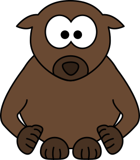

冀教版英语三年级 · 口语开口训练舱
三年级孩子敢开口、说整句、能一问一答
冀教版三年级关键练习豆包陪练
这是什么？
专为冀教版三年级孩子设计的英语开口训练舱，起点 S2。8 个生活单元，每单元 8 句核心句、1 段真实对话、1 个看图说话任务、1 个原创小故事，全部配豆包陪练指令。训练重点是把单词变成整句：能说出身边有什么、会做什么、喜欢什么，每天 12 分钟，让课本里的句子变成孩子自己的话。
适合谁
怎么用（3 步）
- 打开本页，选一个单元
- 先看着中文说出英文，再听句子跟读 3 遍
- 复制该单元的豆包指令，让豆包当陪练，孩子开口回答，每天 12 分钟
单元 1 · 我的学校
My School
目标：会说出教室里的物品和学校里的场所，能用完整句向同学介绍自己的学校
🎬 示例视频
🎧 示例对话音频
🔑 核心句（关键练习）
- This is our classroom. It is big and clean.这是我们的教室。它又大又干净。
- My desk is near the window.我的课桌在窗户旁边。
- We read books in the school library.我们在学校图书馆看书。
- We play games on the playground after class.下课后我们在操场上做游戏。
- Look at the blackboard, please.请看黑板。
- I have six books in my school bag.我书包里有六本书。
- Where is your classroom? It is on the second floor.你们的教室在哪儿？在二层。
- I like my school very much.我非常喜欢我的学校。
📚 本单元词汇
school 学校
classroom 教室
desk 课桌
chair 椅子
blackboard 黑板
book 书
playground 操场
library 图书馆
teacher 老师
词汇例句
- I go to school every day.
- Our classroom is big and clean.
- My desk is near the window.
- Please sit on your chair.
- Look at the blackboard, please.
- I have six books in my bag.
- We play games on the playground.
- We read books in the library.
- My English teacher is very kind.
💬 情景对话
Miss Li
Good morning, boys and girls. This is our classroom.早上好，孩子们。这是我们的教室。
Lily
It is big and clean. I like it very much.它又大又干净。我非常喜欢。
Miss Li
Where is your desk, Tom?汤姆，你的课桌在哪儿？
Tom
My desk is near the window.我的课桌在窗户旁边。
Miss Li
What do you do after class?你们下课后做什么？
Lily
We play games on the playground.我们在操场上做游戏。
Miss Li
And where do you read books?那你们在哪儿看书？
Tom
We read books in the school library.我们在学校图书馆看书。
🖼️ 看图说话任务（P1–P5 分层）

图片描述：一间教室：前面有一块大黑板，黑板上写着 ABC；教室里有四排课桌椅，一个女孩坐在窗边看书；后墙上贴着一张操场的图画。
| 可见事实 | 合理推断 |
|---|---|
| 前面有一块大黑板 | Maybe the girl likes reading, because she has a book in her hands. |
| 黑板上写着 ABC | I think it is morning, because the sun is coming through the window. |
| 教室里有四排课桌椅 | |
| 一个女孩坐在窗边看书 | |
| 后墙上贴着一张图画 |
个人联想：Do you like your classroom? Why?
无法确认：我们看不出女孩在看什么书，也听不到他们在说什么
本单元语言点：There is / There are + 方位介词
观察路线：
| 层级 | 任务要求 |
|---|---|
| P1 | 说出场所和物品：classroom、blackboard、desk、chair、library、playground |
| P2 | 用句框说 3-4 句：This is our ___. / There are ___ desks. / It is near the ___. |
| P3 | 只看关键词 classroom / blackboard / desk / girl / window，说 5-6 句 |
| P4 | 按"前面—中间—窗边—后墙"的顺序说 6-8 句，用上 and 和一个 Maybe |
| P5 | 独立说完，再回答两个追问：Where is your desk? Do you like your classroom? |
句框：There is a ___ in our classroom.
There are ___ desks in it.
The girl is sitting ___.
I think she is ___, because ___.
There are ___ desks in it.
The girl is sitting ___.
I think she is ___, because ___.
提问阶梯：What can you see in the classroom?
Where is the blackboard?
What is the girl doing?
How many desks can you see?
What is your classroom like?
Where is the blackboard?
What is the girl doing?
How many desks can you see?
What is your classroom like?
| 维度 | 达标 | 需要支持 |
|---|---|---|
| 事实准确 | 说的都是图里能看到的东西 | 凭空加了图上没有的物品 |
| 顺序清楚 | 按位置顺序说，不跳来跳去 | 想到什么说什么，听的人跟不上 |
| 句子完整 | 用 There is / There are 完整句 | 只说单词 |
| 推断有证据 | 用了 Maybe / I think... because | 把猜测说成事实 |
📖 故事复述与表达（L1–L5 支架）
The Girl by the Window
Lily is in a new classroom.
She cannot find her desk.
A boy says, "Your desk is near the window."
She puts her books on the desk.
She looks at the blackboard.
She likes the new classroom.
She makes a new friend.
She is very happy.
Lily is in a new classroom.
She cannot find her desk.
A boy says, "Your desk is near the window."
She puts her books on the desk.
She looks at the blackboard.
She likes the new classroom.
She makes a new friend.
She is very happy.
中文大意：莉莉换了新教室，找不到自己的课桌。一个男孩告诉她座位在窗边。她把书放好，看了看黑板，喜欢上了这间新教室，还交了一个新朋友，非常开心。
| 故事地图 | 内容 |
|---|---|
| 人物与情境 | 转到新教室的 Lily 和一个热心男孩 |
| 想要什么 | 想找到自己的座位 |
| 遇到问题 | 换了教室，她不知道坐哪儿 |
| 如何解决 | 男孩告诉她位置，她走过去放好书本 |
| 结果与变化 | 她找到了座位，还交到了新朋友 |
事件顺序：Lily is in a new classroom. → She cannot find her desk. → A boy tells her where it is. → She puts her books on the desk. → She makes a new friend.
排序练习（顺序已打乱）：She makes a new friend.
Lily is in a new classroom.
A boy tells her where it is.
She cannot find her desk.
Lily is in a new classroom.
A boy tells her where it is.
She cannot find her desk.
关键词：classroom / desk / window / books / blackboard / friend
| 支架 | 做法 |
|---|---|
| L1 | 看图跟读关键句：The desk is near the window. |
| L2 | 用句框补地点和物品：She puts her books ___. |
| L3 | 只看关键词 classroom / desk / window / books / friend，按顺序说完整句 |
| L4 | 看着故事地图（谁—想做什么—问题—结果）自己讲一遍 |
| L5 | 只看标题《The Girl by the Window》独立复述，并说出自己座位在哪儿 |
连接词句框：First, Lily is in a ___ classroom.
Then, she cannot find ___.
After that, a boy says, "___."
Finally, Lily is very ___.
Then, she cannot find ___.
After that, a boy says, "___."
Finally, Lily is very ___.
迁移表达：
换视角：换成男孩的视角讲：I see a new girl. I help her.
说感受：莉莉为什么最后很开心？从故事里找一句证据
新结局：如果莉莉的座位就在门口，故事会怎么变？
换视角：换成男孩的视角讲：I see a new girl. I help her.
说感受：莉莉为什么最后很开心？从故事里找一句证据
新结局：如果莉莉的座位就在门口，故事会怎么变？
🤖 豆包陪练指令（本单元）
请你扮演一位亲切的小学英语老师，和我三年级的孩子练习"介绍学校"。规则：1）每次只问一个问题，语速慢，说完等孩子回答；2）孩子说对了，先用中文夸具体的地方，再说下一句；3）说不出先给中文提示，还不行就给完整句让他跟读两遍；4）轮流练 This is our classroom / There are... / Where is...? 三个表达；5）全程不批评、不纠正发音细节，只鼓励开口；6）练完 8 句后用中文总结：今天会说了哪几句，哪一句明天再练。
单元 2 · 食物与餐点
Food and Meals
目标：会说出一日三餐吃了什么，能礼貌地提出自己想吃什么
🎬 示例视频
🎧 示例对话音频
🔑 核心句（关键练习）
- I am hungry. What is for lunch?我饿了。午饭吃什么？
- We have rice, eggs and soup for lunch.我们午饭吃米饭、鸡蛋和汤。
- I eat bread and drink milk for breakfast.我早餐吃面包、喝牛奶。
- Can I have some noodles, please?我可以吃些面条吗？
- My mum cooks dinner at six every day.我妈妈每天六点做晚饭。
- I do not like carrots, but I like eggs.我不喜欢胡萝卜，但我喜欢鸡蛋。
- This soup is hot. Please be careful.这汤很烫。请小心。
- Thank you, Mum. The food is very nice.谢谢妈妈。这些菜非常好吃。
📚 本单元词汇
food 食物
rice 米饭
noodles 面条
bread 面包
egg 鸡蛋
milk 牛奶
breakfast 早餐
dinner 晚餐
soup 汤
hungry 饿的
词汇例句
- I like Chinese food very much.
- We have rice for lunch.
- My mum can cook nice noodles.
- I eat bread for breakfast.
- I eat one egg every morning.
- I drink milk before bed.
- What do you want for breakfast?
- We have dinner at six o'clock.
- This soup is hot and nice.
- I am hungry now.
💬 情景对话
Mum
Lily, are you hungry?莉莉，你饿了吗？
Lily
Yes, I am. What is for lunch?是的。午饭吃什么？
Mum
We have rice, eggs and soup.有米饭、鸡蛋和汤。
Lily
Can I have some noodles too?我还能吃些面条吗？
Mum
Sure. Please wait a minute.当然。请等一下。
Lily
Thank you, Mum. I like noodles very much.谢谢妈妈。我非常喜欢面条。
Mum
What do you want after lunch?午饭后你想吃什么？
Lily
Can I have an apple, please?我能吃个苹果吗？
🖼️ 看图说话任务（P1–P5 分层）

图片描述：一张餐桌：中间有一大碗米饭和一碗汤，左边有一盘面条，右边有一个鸡蛋和一杯牛奶，一个男孩正拿着筷子等着。
| 可见事实 | 合理推断 |
|---|---|
| 中间有一大碗米饭 | Maybe the soup is hot, because there is steam on it. |
| 中间还有一碗汤 | I think the boy is hungry, because he is holding his chopsticks. |
| 左边有一盘面条 | |
| 右边有一个鸡蛋和一杯牛奶 | |
| 一个男孩拿着筷子在等 |
个人联想：What do you eat for lunch?
无法确认：我们看不到汤是什么味道，也看不出有几个人一起吃饭
本单元语言点：I have... for breakfast / Can I have...?
观察路线：
| 层级 | 任务要求 |
|---|---|
| P1 | 说出食物名：rice、noodles、bread、egg、milk、soup |
| P2 | 用句框说 3-4 句：We have ___ for lunch. / Can I have ___? / There is a ___ on the table. |
| P3 | 只看关键词 rice / noodles / egg / milk / soup，说 5-6 句 |
| P4 | 按"中间—左边—右边—人"的顺序说 6-8 句，用上 and 和一个 Maybe |
| P5 | 独立说完，再回答：What do you eat for lunch? 并说出自己最爱吃的一道菜 |
句框：There is some ___ on the table.
We have ___ for lunch.
Can I have some ___, please?
I think the soup is ___, because ___.
We have ___ for lunch.
Can I have some ___, please?
I think the soup is ___, because ___.
提问阶梯：What can you see on the table?
Where is the milk?
What is the boy holding?
Is the soup hot? Why do you think so?
What do you eat for breakfast?
Where is the milk?
What is the boy holding?
Is the soup hot? Why do you think so?
What do you eat for breakfast?
| 维度 | 达标 | 需要支持 |
|---|---|---|
| 事实准确 | 说的都是桌上有的食物 | 凭空加食物 |
| 顺序清楚 | 按位置顺序说 | 乱序 |
| 句子完整 | 用 We have... / Can I have...? 完整句 | 只说食物单词 |
| 推断有证据 | 用 Maybe / I think... because | 直接下结论不给理由 |
📖 故事复述与表达（L1–L5 支架）
Dinner Is Ready
Mum is cooking dinner in the kitchen.
Lily sets the table for the family.
She puts the bowls on the table.
She puts the chopsticks next to the bowls.
Dad comes home at six o'clock.
The family sits down together.
Lily says, "Dinner is ready!"
Everyone is happy.
Mum is cooking dinner in the kitchen.
Lily sets the table for the family.
She puts the bowls on the table.
She puts the chopsticks next to the bowls.
Dad comes home at six o'clock.
The family sits down together.
Lily says, "Dinner is ready!"
Everyone is happy.
中文大意：妈妈在厨房做晚饭，莉莉帮着摆桌子：放好碗，再把筷子摆在碗边。爸爸六点到家，一家人坐下，莉莉说"晚饭好啦！"大家都很开心。
| 故事地图 | 内容 |
|---|---|
| 人物与情境 | 莉莉和她的家人 |
| 想要什么 | 想帮家里把晚饭准备好 |
| 遇到问题 | 碗筷还没摆，晚饭快好了 |
| 如何解决 | 莉莉摆好碗和筷子，等爸爸回家 |
| 结果与变化 | 一家人坐下吃饭，都很开心 |
事件顺序：Mum cooks dinner in the kitchen. → Lily sets the table. → She puts the bowls on the table. → Dad comes home at six. → The family eats together.
排序练习（顺序已打乱）：The family eats together.
Lily sets the table.
Dad comes home at six.
Mum cooks dinner in the kitchen.
Lily sets the table.
Dad comes home at six.
Mum cooks dinner in the kitchen.
关键词：dinner / kitchen / bowls / chopsticks / table / happy
| 支架 | 做法 |
|---|---|
| L1 | 看图跟读关键句：Lily sets the table. |
| L2 | 用句框补食物和物品：She puts the ___ on the table. |
| L3 | 只看关键词 dinner / bowls / chopsticks / table / happy，按顺序说完整句 |
| L4 | 看着故事地图讲一遍（谁—想做什么—做了什么—结果） |
| L5 | 只看标题独立复述，并说说自己家谁做饭 |
连接词句框：First, Mum is cooking ___.
Then, Lily puts the ___ on the table.
After that, Dad comes home at ___.
Finally, the family ___ together.
Then, Lily puts the ___ on the table.
After that, Dad comes home at ___.
Finally, the family ___ together.
迁移表达：
换视角：换成爸爸的视角讲：When I get home, dinner is ready.
说感受：莉莉为什么要帮忙？从故事里找证据
新结局：如果莉莉把筷子放错了地方，故事会怎么变？
换视角：换成爸爸的视角讲：When I get home, dinner is ready.
说感受：莉莉为什么要帮忙？从故事里找证据
新结局：如果莉莉把筷子放错了地方，故事会怎么变？
🤖 豆包陪练指令（本单元）
请你扮演一位温柔的妈妈，和我三年级的孩子练习"说餐点"。规则：1）一次问一个问题，如 What do you want for lunch?；2）孩子答对先用中文夸，再接着问；3）答不出给两个选项让他选，比如"是 rice 还是 noodles？"；4）重点练 We have... for lunch / Can I have...? / I like...；5）最后让孩子说出自己昨天吃了什么；6）全程中文辅助，不纠正发音，只鼓励开口。
单元 3 · 我的身体
My Body
目标：会说出身体部位，能用 I can... 表达各部位能做什么，并说出哪里不舒服
🎬 示例视频
🎧 示例对话音频
🔑 核心句（关键练习）
- This is my head. These are my hands.这是我的头。这是我的双手。
- I can see with my eyes.我用眼睛看东西。
- I can hear with my ears.我用耳朵听声音。
- I can run fast with my legs.我用腿跑得很快。
- I can clap my hands and sing.我会拍手唱歌。
- My left arm hurts a little.我的左胳膊有点疼。
- Wash your hands before you eat.吃饭前要洗手。
- Touch your nose and say the word.摸摸你的鼻子，说出这个单词。
📚 本单元词汇
head 头
hand 手
arm 胳膊
leg 腿
foot 脚
eye 眼睛
ear 耳朵
nose 鼻子
mouth 嘴
body 身体
词汇例句
- This is my head.
- I have two hands.
- I can move my arms.
- My legs help me run fast.
- I have two feet.
- I can see with my eyes.
- I can hear with my ears.
- I can smell with my nose.
- I can sing with my mouth.
- This is my body.
💬 情景对话
Miss Li
Boys and girls, touch your ears, please.孩子们，请摸摸你们的耳朵。
Tom
These are my ears.这是我的耳朵。
Miss Li
Good. What can you do with your hands?很好。你能用手做什么？
Tom
I can clap my hands and draw pictures.我会拍手，还会画画。
Miss Li
What is wrong, Lily?莉莉，你怎么了？
Lily
My left arm hurts a little.我的左胳膊有点疼。
Miss Li
Let me have a look. Please be careful.让我看看。请小心点。
Lily
Thank you, Miss Li.谢谢李老师。
🖼️ 看图说话任务（P1–P5 分层）
图片描述：教室前面，一个男孩举着双手；旁边一个女孩在指着自己的眼睛；黑板上画着一个简笔画小人，旁边标着头、手、腿几个词。
| 可见事实 | 合理推断 |
|---|---|
| 一个男孩举着双手 | Maybe they are playing a game, because the teacher is giving instructions. |
| 旁边站着一个女孩 | I think they are learning body words in English. |
| 女孩在指着自己的眼睛 | |
| 黑板上有一个简笔画小人 |
个人联想：Can you touch your nose and say it in English?
无法确认：我们听不到他们在说什么，也看不出小人的其他细节
本单元语言点：This is my... / I can... with my...
观察路线：
| 层级 | 任务要求 |
|---|---|
| P1 | 说出身体部位：head、hand、arm、leg、eye、ear、nose、mouth |
| P2 | 用句框说 3-4 句：This is my ___. / I have two ___. / I can ___ with my ___. |
| P3 | 只看关键词 hands / eyes / ears / legs / nose，说 5-6 句 |
| P4 | 按"头—脸—手—腿"的顺序说 6-8 句，用上 and 和一个 Maybe |
| P5 | 独立说完，再回答：What can you do with your hands? 并做一个动作 |
句框：This is my ___.
I have two ___.
I can ___ with my ___.
I think they are ___, because ___.
I have two ___.
I can ___ with my ___.
I think they are ___, because ___.
提问阶梯：What is the boy doing?
What is the girl pointing at?
How many hands do you have?
What can you do with your legs?
Why are they doing this?
What is the girl pointing at?
How many hands do you have?
What can you do with your legs?
Why are they doing this?
| 维度 | 达标 | 需要支持 |
|---|---|---|
| 事实准确 | 部位说对了 | 说错部位 |
| 顺序清楚 | 按从上到下说 | 乱序 |
| 句子完整 | 用 This is my / I can 完整句 | 只说单词 |
| 推断有证据 | 用 Maybe / I think... because | 直接下结论 |
📖 故事复述与表达（L1–L5 支架）
Touch Your Ears
Miss Li plays a game with her class.
She says, "Touch your head."
Everyone touches the head.
She says, "Touch your ears."
Tom touches his ears and laughs.
Lily touches her nose by mistake.
The whole class laughs with her.
Lily tries again and gets it right.
Miss Li plays a game with her class.
She says, "Touch your head."
Everyone touches the head.
She says, "Touch your ears."
Tom touches his ears and laughs.
Lily touches her nose by mistake.
The whole class laughs with her.
Lily tries again and gets it right.
中文大意：李老师和班上同学玩听指令游戏。她说"摸头"，大家都摸头；她说"摸耳朵"，汤姆摸着耳朵笑起来。莉莉不小心摸了鼻子，全班都笑了。莉莉又试了一次，这次做对了。
| 故事地图 | 内容 |
|---|---|
| 人物与情境 | 李老师、汤姆和莉莉 |
| 想要什么 | 想跟着英文指令做对动作 |
| 遇到问题 | 要听懂指令，莉莉还做错了一次 |
| 如何解决 | 莉莉又试了一次 |
| 结果与变化 | 全班都笑了，莉莉最后也做对了 |
事件顺序：Miss Li plays a game with the class. → Everyone touches the head. → Tom touches his ears. → Lily touches her nose by mistake. → Lily tries again and gets it right.
排序练习（顺序已打乱）：Lily tries again and gets it right.
Miss Li plays a game with the class.
Lily touches her nose by mistake.
Everyone touches the head.
Miss Li plays a game with the class.
Lily touches her nose by mistake.
Everyone touches the head.
关键词：touch / head / ears / nose / laugh / game
| 支架 | 做法 |
|---|---|
| L1 | 看图跟读关键句：Touch your ears, please. |
| L2 | 用句框补部位：Touch your ___. |
| L3 | 只看关键词 head / ears / nose / laugh / game，按顺序说完整句 |
| L4 | 看着故事地图讲一遍 |
| L5 | 只看标题独立复述，并给同学发一个新的动作指令 |
连接词句框：First, Miss Li says, "___."
Then, everyone touches the ___.
After that, Lily touches her ___ by mistake.
Finally, she tries again and ___.
Then, everyone touches the ___.
After that, Lily touches her ___ by mistake.
Finally, she tries again and ___.
迁移表达：
换视角：换成莉莉的视角讲：I touch my nose, but it is wrong.
说感受：莉莉试第二次时心情怎样？找一句证据
新结局：如果老师说了个很难的动作，会发生什么？
换视角：换成莉莉的视角讲：I touch my nose, but it is wrong.
说感受：莉莉试第二次时心情怎样？找一句证据
新结局：如果老师说了个很难的动作，会发生什么？
🤖 豆包陪练指令（本单元）
请你扮演一位英语老师，和我三年级的孩子玩"摸身体"游戏。规则：1）每次给一个指令 Touch your...；2）孩子做动作并说出英文；3）做对了用中文夸具体的地方，做错了再示范一次；4）重点练 This is my... / I can... with my...；5）最后让孩子给你发一个指令，你来猜；6）全程像玩游戏，不纠正发音，只鼓励开口。
单元 4 · 我的家庭
My Family
目标：会用完整句介绍家人，说出家里有几口人以及家人会做什么
🎬 示例视频
🎧 示例对话音频
🔑 核心句（关键练习）
- There are four people in my family.我家有四口人。
- This is my father. He can fix my bike.这是我爸爸。他会修我的自行车。
- My mother cooks dinner for us every day.我妈妈每天给我们做晚饭。
- I have a brother. He is ten years old.我有一个哥哥。他十岁。
- My grandma can make very nice dumplings.我奶奶会包很好吃的饺子。
- My grandpa likes walking in the park.我爷爷喜欢在公园里散步。
- I help my mum at home on Sunday.我周日在家帮妈妈干活。
- I love my family very much.我非常爱我的家人。
📚 本单元词汇
family 家庭
father 爸爸
mother 妈妈
brother 哥哥
sister 妹妹
grandpa 爷爷
grandma 奶奶
love 爱
home 家
help 帮助
词汇例句
- I love my family very much.
- This is my father.
- My mother can cook nice food.
- My brother is ten years old.
- My sister is four years old.
- My grandpa likes walking in the park.
- My grandma can make dumplings.
- I love my mum and dad.
- We have dinner at home together.
- I help my mum at home.
💬 情景对话
Tom
Is this your family photo, Lily?莉莉，这是你的全家福吗？
Lily
Yes. There are five people in my family.是的。我家有五口人。
Tom
Who is this boy beside you?你旁边这个男孩是谁？
Lily
He is my brother. He is ten years old.他是我哥哥。他十岁。
Tom
What does he like to do?他喜欢做什么？
Lily
He likes playing football with me in the park.他喜欢和我在公园里踢足球。
Tom
And who is this woman?那这位女士是谁？
Lily
She is my grandma. She makes nice dumplings.她是我奶奶。她包的饺子很好吃。
🖼️ 看图说话任务（P1–P5 分层）

图片描述：一张全家福照片：中间坐着爷爷奶奶，后面站着爸爸妈妈，前面站着两个孩子，女孩抱着一只玩具熊，墙上挂着一张画。
| 可见事实 | 合理推断 |
|---|---|
| 中间坐着两位老人 | Maybe they are at home, because there is a sofa behind them. |
| 后面站着两个大人 | I think they took the photo on a happy day, because everyone is smiling. |
| 前面站着两个孩子 | |
| 女孩抱着一只玩具熊 | |
| 墙上挂着一张画 |
个人联想：How many people are in your family?
无法确认：我们看不出每个人具体多少岁，也看不出他们叫什么名字
本单元语言点：This is my... / There are... people in my family.
观察路线：
| 层级 | 任务要求 |
|---|---|
| P1 | 说出家人称呼：father、mother、brother、sister、grandpa、grandma |
| P2 | 用句框说 3-4 句：This is my ___. / There are ___ people in my family. / He / She can ___. |
| P3 | 只看关键词 family / five / brother / grandma / photo，说 5-6 句 |
| P4 | 按"中间—后面—前面"的顺序介绍，说 6-8 句，用上 and |
| P5 | 独立说完，再回答：How many people are in your family? 并介绍一位家人 |
句框：This is my ___.
There are ___ people in my family.
He / She can ___.
I think they are ___, because ___.
There are ___ people in my family.
He / She can ___.
I think they are ___, because ___.
提问阶梯：Who can you see in the photo?
Where are they?
What is the girl holding?
How many people are there?
Who is in your family?
Where are they?
What is the girl holding?
How many people are there?
Who is in your family?
| 维度 | 达标 | 需要支持 |
|---|---|---|
| 事实准确 | 说的都是照片里能看到的人 | 把没看到的人也说成"有" |
| 顺序清楚 | 按位置顺序介绍 | 东一句西一句 |
| 句子完整 | 用 This is my / There are 完整句 | 只说称呼单词 |
| 推断有证据 | 用 Maybe / I think... because | 把猜测当事实 |
📖 故事复述与表达（L1–L5 支架）
Dumpling Sunday
Sunday is dumpling day at Lily's home.
Lily helps her grandma make dumplings.
Her first dumpling looks very small.
Her grandma smiles and says, "Try again."
The second one looks much better.
Dad cooks them in the kitchen.
The family eats them together.
Lily says, "I made these!"
Sunday is dumpling day at Lily's home.
Lily helps her grandma make dumplings.
Her first dumpling looks very small.
Her grandma smiles and says, "Try again."
The second one looks much better.
Dad cooks them in the kitchen.
The family eats them together.
Lily says, "I made these!"
中文大意：莉莉家每周日是"饺子日"。她帮奶奶包饺子，第一个包得很小，奶奶笑着让她再试一次，第二个就好看多了。爸爸下锅煮好，一家人一起吃，莉莉说"这是我包的！"
| 故事地图 | 内容 |
|---|---|
| 人物与情境 | 莉莉、奶奶和爸爸 |
| 想要什么 | 想学会包饺子 |
| 遇到问题 | 第一个饺子包得太小 |
| 如何解决 | 奶奶让她再试一次，她包得更好了 |
| 结果与变化 | 全家人一起吃饺子，莉莉很自豪 |
事件顺序：Lily helps her grandma make dumplings. → Her first dumpling looks very small. → Grandma asks her to try again. → Dad cooks the dumplings. → The family eats them together.
排序练习（顺序已打乱）：Dad cooks the dumplings.
Her first dumpling looks very small.
The family eats them together.
Lily helps her grandma make dumplings.
Her first dumpling looks very small.
The family eats them together.
Lily helps her grandma make dumplings.
关键词：Sunday / dumplings / grandma / small / try again / together
| 支架 | 做法 |
|---|---|
| L1 | 看图跟读关键句：Lily makes dumplings with her grandma. |
| L2 | 用句框补人物和形容词：Her ___ dumpling looks ___. |
| L3 | 只看关键词 Sunday / dumplings / grandma / try again / together，按顺序说完整句 |
| L4 | 看着故事地图讲一遍 |
| L5 | 只看标题独立复述，并说说自己家谁做饭 |
连接词句框：First, Lily helps her ___ make dumplings.
Then, her first dumpling looks ___.
After that, Grandma says, "___."
Finally, the family ___ together.
Then, her first dumpling looks ___.
After that, Grandma says, "___."
Finally, the family ___ together.
迁移表达：
换视角：换成奶奶的视角讲：My granddaughter wants to help me.
说感受：莉莉为什么说"我包的"？找一句证据
新结局：如果莉莉一直包不好，故事会怎么变？
换视角：换成奶奶的视角讲：My granddaughter wants to help me.
说感受：莉莉为什么说"我包的"？找一句证据
新结局：如果莉莉一直包不好，故事会怎么变？
🤖 豆包陪练指令（本单元）
请你扮演一个好奇的小朋友，和我三年级的孩子练习"介绍家人"。规则：1）一次问一个问题，并翻译一遍中文；2）孩子答对先用中文夸具体点，再问下一个；3）答不出给两个选项让他选，比如"是 brother 还是 sister？"；4）重点练 This is my... / There are... people / He can...；5）最后让孩子介绍自己的一位家人，说不出时给句框；6）全程轻松，不纠正发音。
单元 5 · 动物
Animals
目标：会说出常见动物的名字，能用 can / cannot 说出动物会做什么，并说出自己最喜欢什么动物
🎬 示例视频
🎧 示例对话音频
🔑 核心句（关键练习）
- I like animals. I have a cat at home.我喜欢动物。我家有一只猫。
- My cat can climb the tree in our garden.我的猫会爬我们花园里的树。
- The bird can fly high in the sky.鸟儿能在天上飞得很高。
- The fish can swim fast in the water.鱼能在水里游得很快。
- The rabbit has two long ears and a short tail.兔子有两只长耳朵和一条短尾巴。
- The panda is black and white, and it eats bamboo.熊猫是黑白色的，它吃竹子。
- Can a tiger swim? Yes, it can swim.老虎会游泳吗？是的，它会游泳。
- Let us go to the zoo this Saturday morning.我们这周六上午去动物园吧。
📚 本单元词汇
cat 猫
dog 狗
bird 鸟
fish 鱼
rabbit 兔子
panda 熊猫
tiger 老虎
monkey 猴子
animal 动物
zoo 动物园
词汇例句
- I have a cat at home.
- My dog can run very fast.
- The bird can fly in the sky.
- The fish can swim in the water.
- The rabbit has two long ears.
- The panda is black and white.
- The tiger can run very fast.
- The monkey can climb the tree.
- I like animals very much.
- We go to the zoo on Sunday.
💬 情景对话
Lily
Do you like animals, Tom?汤姆，你喜欢动物吗？
Tom
Yes, I do. I have a dog at home.喜欢，我家有一只狗。
Lily
What can your dog do?你的狗会做什么？
Tom
It can run fast and catch a ball.它能跑得快，还会接球。
Lily
My cat can climb trees very quickly.我的猫爬树爬得很快。
Tom
Really? Can your cat swim?真的吗？你的猫会游泳吗？
Lily
No, it cannot. But it can jump very high.不会。但它能跳得很高。
Tom
Let us go to the zoo on Saturday.我们周六去动物园吧。
🖼️ 看图说话任务（P1–P5 分层）
图片描述：一个动物园：草地上有一只兔子和一只狗，树上有两只猴子，水池里有三条鱼，远处一只熊猫正坐在地上吃竹子。
| 可见事实 | 合理推断 |
|---|---|
| 草地上有一只兔子和一只狗 | Maybe the panda is hungry, because it is holding bamboo. |
| 树上有两只猴子 | I think the monkeys are playful, because they are jumping in the tree. |
| 水池里有三条鱼 | |
| 远处有一只熊猫在吃竹子 |
个人联想：Do you have a pet? What can it do?
无法确认：我们看不出动物的年龄，也听不到它们发出什么声音
本单元语言点：The ___ can... / Can it...?
观察路线：
| 层级 | 任务要求 |
|---|---|
| P1 | 说出动物名：cat、dog、bird、fish、rabbit、panda、tiger、monkey |
| P2 | 用句框说 3-4 句：The ___ can ___. / I can see a ___ in the ___. |
| P3 | 只看关键词 rabbit / monkey / fish / panda / bamboo，说 5-6 句 |
| P4 | 按"草地—树上—水里—远处"的顺序说 6-8 句，用上 and 和一个 Maybe |
| P5 | 独立说完，再回答：What is your favourite animal? Why do you like it? |
句框：The ___ can ___.
There are ___ ___ in the picture.
I can see a ___ in the ___.
I think the panda is ___, because ___.
There are ___ ___ in the picture.
I can see a ___ in the ___.
I think the panda is ___, because ___.
提问阶梯：What animals can you see?
What can the monkey do?
What is the panda doing?
Where are the fish?
What is your favourite animal? Why?
What can the monkey do?
What is the panda doing?
Where are the fish?
What is your favourite animal? Why?
| 维度 | 达标 | 需要支持 |
|---|---|---|
| 事实准确 | 说的都是图里有的动物 | 凭空加没看到的动物 |
| 顺序清楚 | 按位置顺序说 | 乱序 |
| 句子完整 | 用 The ... can ... 完整句 | 只说动物名 |
| 推断有证据 | 用 Maybe / I think... because | 直接说"它饿了"不给理由 |
📖 故事复述与表达（L1–L5 支架）
The Monkey and the Ball
Tom takes his new ball to the zoo.
The ball rolls away under a big tree.
A small monkey sees the ball on the grass.
The monkey picks it up very quickly.
It looks at Tom and holds the ball.
Tom says, "Please give it back."
The monkey drops the ball into his hands.
Tom laughs and says thank you.
Tom takes his new ball to the zoo.
The ball rolls away under a big tree.
A small monkey sees the ball on the grass.
The monkey picks it up very quickly.
It looks at Tom and holds the ball.
Tom says, "Please give it back."
The monkey drops the ball into his hands.
Tom laughs and says thank you.
中文大意：汤姆带着新球去动物园，球滚到了一棵大树下。一只小猴子看见了，飞快地把球捡起来，看着汤姆不肯放。汤姆说"请还给我"，猴子把球丢回他手里，汤姆笑着说了谢谢。
| 故事地图 | 内容 |
|---|---|
| 人物与情境 | 汤姆和一只小猴子 |
| 想要什么 | 想拿回自己的球 |
| 遇到问题 | 球滚到了树下，被猴子捡走 |
| 如何解决 | 汤姆开口请猴子把球还给他 |
| 结果与变化 | 猴子把球丢回他手里，汤姆很开心 |
事件顺序：Tom takes his ball to the zoo. → The ball rolls away under a tree. → A monkey picks up the ball. → Tom asks for his ball. → The monkey gives it back.
排序练习（顺序已打乱）：The monkey gives it back.
A monkey picks up the ball.
Tom takes his ball to the zoo.
Tom asks for his ball.
A monkey picks up the ball.
Tom takes his ball to the zoo.
Tom asks for his ball.
关键词：ball / zoo / tree / monkey / back / laugh
| 支架 | 做法 |
|---|---|
| L1 | 看图跟读关键句：The monkey picks up the ball. |
| L2 | 用句框补动物和动作：The ___ can ___. |
| L3 | 只看关键词 ball / tree / monkey / back / laugh，按顺序说完整句 |
| L4 | 看着故事地图讲一遍（谁—想做什么—问题—结果） |
| L5 | 只看标题独立复述，并说出自己最喜欢什么动物 |
连接词句框：First, Tom takes his ___ to the zoo.
Then, the ball rolls ___.
After that, a monkey ___.
Finally, Tom says, "___."
Then, the ball rolls ___.
After that, a monkey ___.
Finally, Tom says, "___."
迁移表达：
换视角：换成小猴子的视角讲：I see a ball on the grass.
说感受：汤姆为什么笑了？从故事里找证据
新结局：如果球滚进了水池，故事会怎么变？
换视角：换成小猴子的视角讲：I see a ball on the grass.
说感受：汤姆为什么笑了？从故事里找证据
新结局：如果球滚进了水池，故事会怎么变？
🤖 豆包陪练指令（本单元）
请你扮演动物园的小导游，和我三年级的孩子练习"说动物"。规则：1）每次介绍一种动物，说 It can...；2）让孩子跟着说一遍，再说出自己喜欢的动物；3）孩子卡住时给中文提示和句框 The ___ can ___；4）重点练 can / cannot；5）最后问 What is your favourite animal? Why?；6）全程中文辅助，鼓励开口，不纠正发音。
单元 6 · 颜色
Colours
目标：会说出常见颜色，能描述身边物品的颜色，并说出自己喜欢的颜色
🎬 示例视频
🎧 示例对话音频
🔑 核心句（关键练习）
- What colour is your bag? It is blue.你的书包是什么颜色的？是蓝色的。
- The sky is blue and the clouds are white.天空是蓝色的，云是白色的。
- I have a green pencil and a red ruler.我有一支绿铅笔和一把红尺子。
- Look at that yellow duck on the water.看水面上那只黄色的鸭子。
- My cat is black and white. It is lovely.我的猫是黑白色的。它很可爱。
- Red and yellow make orange.红色和黄色调成橙色。
- Please colour the tree green.请把树涂成绿色。
- I like orange best, so my hat is orange.我最喜欢橙色，所以我的帽子是橙色的。
📚 本单元词汇
red 红色
yellow 黄色
blue 蓝色
green 绿色
black 黑色
white 白色
orange 橙色
brown 棕色
colour 颜色
draw 画
词汇例句
- My bag is red.
- The duck is yellow.
- The sky is blue today.
- The trees are green in spring.
- My cat is black and white.
- The cloud is white.
- I have an orange pencil.
- The dog is brown.
- What colour is it?
- I can draw with my crayons.
💬 情景对话
Lily
Tom, what colour is your new bag?汤姆，你的新书包是什么颜色的？
Tom
It is blue. What colour do you like?是蓝色的。你喜欢什么颜色？
Lily
I like green. My pencil box is green.我喜欢绿色。我的铅笔盒是绿色的。
Tom
Look at the sky. It is so blue today.看天空。今天特别蓝。
Lily
Yes, and the trees are green, too.是的，树也是绿的。
Tom
What do red and yellow make?红色和黄色调在一起是什么？
Lily
They make orange. Let us try it!调成橙色。我们试试吧！
Tom
Good idea. I will get the paper.好主意。我去拿纸。
🖼️ 看图说话任务（P1–P5 分层）
图片描述：一个公园：蓝天上有一朵白云，草地上有两棵绿树，河里有一只黄色的鸭子，岸边放着一个红色的书包和一把蓝色的雨伞。
| 可见事实 | 合理推断 |
|---|---|
| 天上有一朵白云 | Maybe it is a sunny day, because the sky is blue. |
| 草地上有两棵绿树 | I think someone is coming back for the bag, because it looks new. |
| 河里有一只黄色的鸭子 | |
| 岸边有一个红色书包 | |
| 岸边还有一把蓝色的雨伞 |
个人联想：What colour do you like best?
无法确认：我们看不出鸭子在做什么，也看不出雨伞是谁的
本单元语言点：The ___ is... / What colour is...?
观察路线：
| 层级 | 任务要求 |
|---|---|
| P1 | 说出颜色和对应的东西：blue sky、green tree、yellow duck、red bag |
| P2 | 用句框说 3-4 句：The ___ is ___. / I can see a ___. |
| P3 | 只看关键词 sky / tree / duck / bag / umbrella，说 5-6 句 |
| P4 | 按"天—地—河—岸边"的顺序说 6-8 句，用上 and 和一个 Maybe |
| P5 | 独立说完，再回答：What colour do you like best? 并说出理由 |
句框：The ___ is ___.
I can see a ___ in the ___.
It is on / in the ___.
I think it is ___, because ___.
I can see a ___ in the ___.
It is on / in the ___.
I think it is ___, because ___.
提问阶梯：What can you see in the park?
What colour is the duck?
Where is the blue umbrella?
Is it a sunny day? Why do you think so?
What colour do you like best?
What colour is the duck?
Where is the blue umbrella?
Is it a sunny day? Why do you think so?
What colour do you like best?
| 维度 | 达标 | 需要支持 |
|---|---|---|
| 事实准确 | 颜色说对了 | 把颜色说错或乱猜 |
| 顺序清楚 | 按空间顺序说 | 想到哪说到哪 |
| 句子完整 | 用 The ... is ... 完整句 | 只说颜色单词 |
| 推断有证据 | 用 Maybe / I think... because | 只说"是晴天"不给理由 |
📖 故事复述与表达（L1–L5 支架）
The Lost Red Bag
Amy has a small red bag.
She puts it under a green tree.
After a while, the bag is gone.
She looks at a blue bag. It is not hers.
She looks at a black bag. It is not hers.
Then she sees something red near the flowers.
It is her bag!
She smiles and goes home happily.
Amy has a small red bag.
She puts it under a green tree.
After a while, the bag is gone.
She looks at a blue bag. It is not hers.
She looks at a black bag. It is not hers.
Then she sees something red near the flowers.
It is her bag!
She smiles and goes home happily.
中文大意：艾米有个小红包，她把它放在一棵绿树下。过了一会儿包不见了。她看了一个蓝包不是她的，看了一个黑包也不是。后来她在花丛旁看到一点红色，正是她的包！她笑着回家了。
| 故事地图 | 内容 |
|---|---|
| 人物与情境 | 艾米和她的红包 |
| 想要什么 | 想找回自己的小包 |
| 遇到问题 | 包放在树下后不见了 |
| 如何解决 | 她一个一个看颜色，最后在花丛旁找到 |
| 结果与变化 | 她找回了自己的包，开心地回家 |
事件顺序：Amy puts her red bag under a tree. → The bag is gone. → She looks at a blue bag. → She looks at a black bag. → She finds her bag near the flowers.
排序练习（顺序已打乱）：She finds her bag near the flowers.
Amy puts her red bag under a tree.
She looks at a blue bag.
The bag is gone.
Amy puts her red bag under a tree.
She looks at a blue bag.
The bag is gone.
关键词：red / bag / tree / blue / black / flowers
| 支架 | 做法 |
|---|---|
| L1 | 看图跟读关键句：Her bag is red. |
| L2 | 用句框补颜色：The ___ bag is ___. |
| L3 | 只看关键词 red / bag / tree / blue / flowers，按顺序说完整句 |
| L4 | 看着故事地图讲一遍 |
| L5 | 只看标题独立复述，并说出自己书包的颜色 |
连接词句框：First, Amy puts her bag ___.
Then, the bag is ___.
After that, she looks at a ___ bag.
Finally, she finds it ___.
Then, the bag is ___.
After that, she looks at a ___ bag.
Finally, she finds it ___.
迁移表达：
换视角：换成小包的视角讲：I am a small red bag under a tree.
说感受：艾米为什么能找到包？从故事里找证据
新结局：如果艾米的包是绿色的，故事会怎么变？
换视角：换成小包的视角讲：I am a small red bag under a tree.
说感受：艾米为什么能找到包？从故事里找证据
新结局：如果艾米的包是绿色的，故事会怎么变？
🤖 豆包陪练指令（本单元）
请你扮演一个喜欢提问的小朋友，和我三年级的孩子练习"说颜色"。规则：1）指着身边一样东西问 What colour is it?；2）孩子答对先用中文夸，再换下一样；3）答不出给中文提示，还不行就给完整句跟读；4）重点练 The ... is ... 和 What colour is it?；5）最后让孩子说出三样自己房间里东西的颜色；6）全程鼓励，不纠正发音。
单元 7 · 数字
Numbers
目标：会数 1-20，能说出数量、时间，并用完整句回答 How many...?
🎬 示例视频
🎧 示例对话音频
🔑 核心句（关键练习）
- How many books do you have? I have ten.你有几本书？我有十本。
- There are twenty desks in our classroom.我们教室里有二十张课桌。
- Two plus three is five.二加三等于五。
- I have twelve crayons in my pencil box.我铅笔盒里有十二支蜡笔。
- Let us count from one to twenty.我们从一数到二十吧。
- There are twelve months in a year.一年有十二个月。
- I get up at seven o'clock every morning.我每天早上七点起床。
- Can you count the birds in the tree?你能数一数树上的鸟吗？
📚 本单元词汇
one 一
two 二
three 三
ten 十
twelve 十二
twenty 二十
number 数字
count 数数
plus 加
o'clock ……点钟
词汇例句
- I have one ruler.
- I have two pens.
- There are three birds in the tree.
- I have ten books.
- A year has twelve months.
- There are twenty desks here.
- What number is this?
- Let us count together.
- Two plus three is five.
- I get up at seven o'clock.
💬 情景对话
Miss Li
How many students are here today?今天有多少学生到校？
Tom
There are twenty students in our class.我们班有二十名学生。
Miss Li
Good. Can you count from one to twenty?很好。你能从一数到二十吗？
Tom
Yes. One, two, three... twenty!能。一、二、三……二十！
Miss Li
Well done. How many books are on your desk?做得好。你桌上有几本书？
Tom
There are three books and one ruler.有三本书和一把尺子。
Miss Li
What is two plus three?二加三是多少？
Tom
It is five. I like numbers very much.是五。我非常喜欢数字。
🖼️ 看图说话任务（P1–P5 分层）

图片描述：一间教室：黑板上写着数字 1 到 20，课桌上放着三本书和一把尺子，墙上挂着一张十二色的蜡笔图，一个男孩举着十根手指。
| 可见事实 | 合理推断 |
|---|---|
| 黑板上有数字 1 到 20 | Maybe they are having a maths lesson, because there are numbers on the blackboard. |
| 课桌上放着三本书 | I think the boy is counting his fingers for the class. |
| 课桌上还有一把尺子 | |
| 墙上挂着一张蜡笔图 | |
| 一个男孩举着双手 |
个人联想：How many books do you have?
无法确认：我们看不清男孩举了几根手指，也看不出书上写了什么
本单元语言点：There are... / How many...?
观察路线：
| 层级 | 任务要求 |
|---|---|
| P1 | 说出数字和东西：three books、one ruler、twenty desks、twelve crayons |
| P2 | 用句框说 3-4 句：There are ___ books. / I have ___ crayons. / It is ___ o'clock. |
| P3 | 只看关键词 blackboard / books / ruler / crayons / fingers，说 5-6 句 |
| P4 | 按"黑板—课桌—墙—人"的顺序说 6-8 句，用上 and 和一个 Maybe |
| P5 | 独立说完，再回答：What time do you get up? 并说出自己会数到几 |
句框：There are ___ ___ on the desk.
I have ___ crayons.
I get up at ___ o'clock.
I think they are ___, because ___.
I have ___ crayons.
I get up at ___ o'clock.
I think they are ___, because ___.
提问阶梯：How many books can you see?
What is on the blackboard?
What is the boy doing?
What time do you get up?
Can you count from one to twenty?
What is on the blackboard?
What is the boy doing?
What time do you get up?
Can you count from one to twenty?
| 维度 | 达标 | 需要支持 |
|---|---|---|
| 事实准确 | 数量说对了 | 数错或乱说 |
| 顺序清楚 | 按位置顺序说 | 跳来跳去 |
| 句子完整 | 用 There are / I have 完整句 | 只报数字 |
| 推断有证据 | 用 Maybe / I think... because | 直接下结论不给理由 |
📖 故事复述与表达（L1–L5 支架）
Counting the Ducks
Lily and Tom stand by the lake.
They see some ducks on the water.
Lily counts one, two, three.
Tom says, "Look, there are two more."
They count again very slowly.
There are five little ducks in all.
One duck swims away quickly.
Now they can see four ducks.
Lily and Tom stand by the lake.
They see some ducks on the water.
Lily counts one, two, three.
Tom says, "Look, there are two more."
They count again very slowly.
There are five little ducks in all.
One duck swims away quickly.
Now they can see four ducks.
中文大意：莉莉和汤姆站在湖边看鸭子。莉莉数了一、二、三，汤姆说还有两只。他们又慢慢数了一遍，一共五只小鸭子。后来一只游走了，现在能看到四只。
| 故事地图 | 内容 |
|---|---|
| 人物与情境 | 莉莉和汤姆 |
| 想要什么 | 想数清湖里有几只鸭子 |
| 遇到问题 | 鸭子会游动，数着数着就变了 |
| 如何解决 | 两个人一起慢慢数，还看到了新来的两只 |
| 结果与变化 | 一共五只，走了一只后剩四只 |
事件顺序：Lily and Tom stand by the lake. → They see some ducks. → Lily counts three ducks. → Tom sees two more ducks. → One duck swims away.
排序练习（顺序已打乱）：One duck swims away.
They see some ducks.
Tom sees two more ducks.
Lily counts three ducks.
They see some ducks.
Tom sees two more ducks.
Lily counts three ducks.
关键词：lake / ducks / count / three / five / four
| 支架 | 做法 |
|---|---|
| L1 | 看图跟读关键句：There are five ducks. |
| L2 | 用句框补数字：There are ___ ducks. |
| L3 | 只看关键词 lake / ducks / count / five / four，按顺序说完整句 |
| L4 | 看着故事地图讲一遍 |
| L5 | 只看标题独立复述，并数一数自己书包里有几支笔 |
连接词句框：First, Lily and Tom stand ___.
Then, Lily counts ___ ducks.
After that, Tom sees ___ more.
Finally, there are ___ ducks.
Then, Lily counts ___ ducks.
After that, Tom sees ___ more.
Finally, there are ___ ducks.
迁移表达：
换视角：换成小鸭子的视角讲：Two children are counting us.
说感受：他们为什么要数第二遍？找一句证据
新结局：如果又游来三只鸭子，故事会怎么变？
换视角：换成小鸭子的视角讲：Two children are counting us.
说感受：他们为什么要数第二遍？找一句证据
新结局：如果又游来三只鸭子，故事会怎么变？
🤖 豆包陪练指令（本单元）
请你扮演一位耐心的数学老师，和我三年级的孩子练习"数字"。规则：1）先问 How many...? 让孩子数身边的东西；2）再让他从一数到二十，数错了就一起慢慢数；3）用中文提示，不催促；4）重点练 There are... / I have... / What time...?；5）最后让孩子说出自己几支笔、几本书；6）全程鼓励，数错也先肯定再一起重数。
单元 8 · 衣物
Clothes
目标：会说出常见衣物的名字，能描述自己穿什么，并用 too big / too small 表达合不合身
🎬 示例视频
🎧 示例对话音频
🔑 核心句（关键练习）
- I wear my blue coat to school today.我今天穿着蓝外套去上学。
- It is cold. Please put on your sweater.天冷。请穿上你的毛衣。
- My shoes are old, but they are very clean.我的鞋旧了，但是很干净。
- Where are my socks? They are on the bed.我的袜子在哪儿？在床上。
- This hat is too big for me.这顶帽子对我来说太大了。
- I like this red sweater very much.我非常喜欢这件红毛衣。
- These trousers are too long. Do you have short ones?这条裤子太长了。有短一点的吗？
- Take off your coat. It is warm in the room.把外套脱了吧。屋里很暖和。
📚 本单元词汇
clothes 衣服
coat 外套
sweater 毛衣
shirt 衬衫
trousers 裤子
shoes 鞋
socks 袜子
hat 帽子
wear 穿
put on 穿上
词汇例句
- These are my new clothes.
- I wear my blue coat today.
- My mum gives me a red sweater.
- This shirt is too big for me.
- These trousers are too long.
- My shoes are old but clean.
- My socks are on the bed.
- I like this yellow hat.
- I wear a coat in winter.
- Please put on your sweater.
💬 情景对话
Mum
Lily, it is cold today. Put on your coat.莉莉，今天冷。穿上外套。
Lily
OK, Mum. Where is my sweater?好的，妈妈。我的毛衣在哪儿？
Mum
It is on your bed, next to the hat.在你床上，帽子旁边。
Lily
This sweater is too small for me now.这件毛衣我现在穿太小了。
Mum
Then wear your blue coat today.那就穿你的蓝外套吧。
Lily
Where are my shoes? I cannot find them.我的鞋在哪儿？我找不到了。
Mum
They are under the chair in the living room.在客厅的椅子下面。
Lily
Thank you, Mum. I am ready for school.谢谢妈妈。我准备好上学了。
🖼️ 看图说话任务（P1–P5 分层）
图片描述：一间卧室：床上放着一件蓝色外套和一顶黄帽子，椅子下面有一双鞋，衣柜门开着，里面挂着一件红毛衣和一条裤子，一个女孩正坐在床边穿袜子。
| 可见事实 | 合理推断 |
|---|---|
| 床上有一件蓝色外套 | Maybe she is getting ready for school, because she is putting on her socks. |
| 床上还有一顶黄色帽子 | I think it is a cold morning, because she has a thick coat. |
| 椅子下面有一双鞋 | |
| 衣柜里挂着一件红毛衣和一条裤子 | |
| 一个女孩坐在床边穿袜子 |
个人联想：What do you wear to school today?
无法确认：我们看不出鞋子是什么颜色，也不知道她几点出门
本单元语言点：This is my... / It is too... for me.
观察路线：
| 层级 | 任务要求 |
|---|---|
| P1 | 说出衣物名：coat、sweater、shirt、trousers、shoes、socks、hat |
| P2 | 用句框说 3-4 句：I wear my ___ today. / It is too ___ for me. / They are under the ___. |
| P3 | 只看关键词 coat / hat / shoes / sweater / socks，说 5-6 句 |
| P4 | 按"床上—椅下—衣柜—人"的顺序说 6-8 句，用上 and 和一个 Maybe |
| P5 | 独立说完，再回答：What do you wear to school today? 并说出三件衣物 |
句框：There is a ___ on the bed.
The shoes are ___ the chair.
I wear my ___ to school.
I think she is ___, because ___.
The shoes are ___ the chair.
I wear my ___ to school.
I think she is ___, because ___.
提问阶梯：What clothes can you see?
Where are the shoes?
What is the girl doing?
What colour is the sweater?
What do you wear on a cold day?
Where are the shoes?
What is the girl doing?
What colour is the sweater?
What do you wear on a cold day?
| 维度 | 达标 | 需要支持 |
|---|---|---|
| 事实准确 | 说的都是图里能看到的东西 | 凭空加衣物 |
| 顺序清楚 | 按位置说 | 乱序 |
| 句子完整 | 用 I wear / It is too... 完整句 | 只说衣物单词 |
| 推断有证据 | 用 Maybe / I think... because | 直接下结论 |
📖 故事复述与表达（L1–L5 支架）
The Missing Shoe
Tom is getting ready for school.
He puts on his coat and his hat.
But he cannot find one shoe.
He looks under the bed.
He looks behind the door.
His cat is sleeping on the shoe.
Tom says, "Wake up, little cat."
The cat runs away and Tom laughs.
Tom is getting ready for school.
He puts on his coat and his hat.
But he cannot find one shoe.
He looks under the bed.
He looks behind the door.
His cat is sleeping on the shoe.
Tom says, "Wake up, little cat."
The cat runs away and Tom laughs.
中文大意：汤姆准备上学，穿好了外套和帽子，却找不到一只鞋。他找了床下，找了门后，最后发现他的猫正睡在那只鞋上。汤姆说"醒醒，小猫咪"，猫跑开了，汤姆笑了起来。
| 故事地图 | 内容 |
|---|---|
| 人物与情境 | 汤姆和他家的猫 |
| 想要什么 | 想在出门前找到另一只鞋 |
| 遇到问题 | 一只鞋找不到了 |
| 如何解决 | 他找了床下和门后 |
| 结果与变化 | 发现猫睡在鞋上，把猫叫醒拿回了鞋 |
事件顺序：Tom gets ready for school. → He cannot find one shoe. → He looks under the bed. → He looks behind the door. → His cat is sleeping on it.
排序练习（顺序已打乱）：His cat is sleeping on it.
Tom gets ready for school.
He looks behind the door.
He cannot find one shoe.
Tom gets ready for school.
He looks behind the door.
He cannot find one shoe.
关键词：ready / coat / shoe / bed / door / cat
| 支架 | 做法 |
|---|---|
| L1 | 看图跟读关键句：He cannot find one shoe. |
| L2 | 用句框补衣物和位置：He looks ___ the ___. |
| L3 | 只看关键词 ready / shoe / bed / door / cat，按顺序说完整句 |
| L4 | 看着故事地图讲一遍 |
| L5 | 只看标题独立复述，并说说自己今天穿了什么 |
连接词句框：First, Tom is getting ready for ___.
Then, he cannot find his ___.
After that, he looks ___ the bed.
Finally, his cat is ___ on it.
Then, he cannot find his ___.
After that, he looks ___ the bed.
Finally, his cat is ___ on it.
迁移表达：
换视角：换成小猫的视角讲：I am sleeping on a warm shoe.
说感受：汤姆为什么最后笑了？从故事里找证据
新结局：如果鞋在书包里，故事会怎么变？
换视角：换成小猫的视角讲：I am sleeping on a warm shoe.
说感受：汤姆为什么最后笑了？从故事里找证据
新结局：如果鞋在书包里，故事会怎么变？
🤖 豆包陪练指令（本单元）
请你扮演一位爱帮忙的妈妈，和我三年级的孩子练习"说衣物"。规则：1）指着一件衣服问 What is this? / What colour is it?；2）孩子答对先用中文夸，再换下一件；3）答不出给中文提示，还不行给完整句跟读两遍；4）重点练 I wear my... / It is too big / small for me；5）最后让孩子说出自己今天穿的三件衣物；6）全程中文辅助，鼓励开口，不纠正发音。
🎯 口语诊断与分级（起始层级测评）
测评条件：三年级学生，1 对 1，12-15 分钟，中教或外教均可，用于入学分班或学期复测
低压力开场白（可直接念给孩子）：这不是考试，说错也没关系。不知道的时候可以说 "I am not sure"，也可以让我再说一遍。我们就是聊聊天，看看你现在能自己说出什么。
六段任务
| 任务 | 教师指令 | 支架递减 | 观察什么 |
|---|---|---|---|
| 课堂指令 | Please stand up. / Touch your ears. / Open your book. | 等待→重复→示范动作 | 能不能听懂并做出动作 |
| 个人回答 | What is your name? / How many people are in your family? | 等待→二选一→句框 | 能不能用完整句回答 |
| 图片描述 | Look at this picture. What can you see? | 等待→What else?→句框 | 能不能说出人物、位置和两个细节 |
| 互动问答 | Do you like animals? What can a bird do? | 等待→Why?→给理由句框 | 能不能回答并反问一句 |
| 连续表达 | Tell me about your school in three sentences. | 等待→关键词→句框 | 能不能连说 3 句以上 |
| 情景任务 | 你在商店想买一个书包，怎么说？ | 等待→角色扮演→示范 | 能不能完成一次简单交际 |
六维表现记录（0–3 级）
| 维度 | 0级 | 1级 | 2级 | 3级 |
|---|---|---|---|---|
| 指令理解 | 听不懂也不做 | 需要看别人做才跟着做 | 需要重复或示范后能做 | 立刻能做 |
| 句子完整度 | 只说单词 | 能说 2-3 个词的短语 | 能说简单完整句 | 能说带修饰的完整句 |
| 互动回应 | 不回应 | 点头或摇头 | 能回答 | 能回答并追问一句 |
| 连续表达 | 说不出 | 说 1 句 | 说 2-3 句 | 能说 4 句以上并有连接 |
| 任务完成 | 完不成 | 需要全程示范 | 需要部分提示 | 能独立完成 |
| 独立程度 | 必须跟读 | 需要句框 | 需要关键词 | 只看图就能说 |
内部起始层级 S1–S5
| 层级 | 含义 |
|---|---|
| S1 | 模仿表达：主要靠示范、图片和跟读，能跟说单词和短句 |
| S2 | 句框表达：能用固定句型完成熟悉问答，如 There are four people in my family. |
| S3 | 互动表达：能回答、提问并补充一点简单信息 |
| S4 | 连续表达：能围绕熟悉主题连续说 3-4 句并完成角色任务 |
| S5 | 迁移表达：能说明理由并在新情境里组织表达 |
这是机构内部层级，用于决定"从哪里开始学"，不等于剑桥、CEFR 或校内官方等级。
前 4 课建议
| 课次 | 口语目标 | 核心任务 | 支架 | 学习证据 |
|---|---|---|---|---|
| 第1课 | 敢开口说整句 | 练 This is my... / I have... 两组句型 | 句框 + 图片 | 能主动说出 3 句完整英文 |
| 第2课 | 会说颜色和数量 | 描述身边物品的颜色和数量 | 实物 + 句框 | 能说出 5 样东西的颜色和数量 |
| 第3课 | 能介绍家人或学校 | 用 This is my... / There are... 介绍 3 项 | 照片或平面图 | 能独立介绍 3 项内容 |
| 第4课 | 能完成一次小对话 | 买东西 + 道谢的角色扮演 | 句框递减 | 能在提示下完成 4 轮对话 |
给家长的说明：这次只是看看孩子现在"能独立完成什么、需要什么帮助"，不是打分，也不代表孩子的英语水平就定下来了。三年级孩子大多从"敢开口、能说整句"开始：能用一个句型回答、能说出身边东西的颜色和数量，就已经是很好的起点。我们前 4 课重点练说整句、颜色与数量、介绍家人和学校、买东西的小对话，4 课后会用同样的任务再看一次，重点看孩子是不是更少依赖提示了。
🗺️ 主题口语项目
班级小调查：大家最喜欢什么（采访 + 汇报）
真实受众：班级同学（或家里一起学习的小伙伴）
驱动任务：我们如何用英语问出同学"最喜欢什么动物、什么食物"，让全班发现一个有意思的共同点？
最终口语作品：一段 1-2 分钟的英文汇报：采访 3 位同学、记录 6 个答案、说出 2 个发现，并回答听众的 2 个提问
| 课次 | 里程碑 | 学生口语任务 | 支架 | 阶段证据 |
|---|---|---|---|---|
| 1 | Launch | 用 3 个问题采访一位同学 | 问题卡 + 示范 | 能问出 3 个问题并记下答案 |
| 2 | Explore | 听一段示范汇报，找出"说了几个发现" | 示范录音 | 能说出汇报包含的 3 个要素 |
| 3 | Language workshop | 练 Do you like...? / My favourite... / Two of us... 三组句框 | 句框 + 记录表 | 能用句框说出 2 个发现 |
| 4 | Publish | 采访 3 位同学并向大家汇报 | 关键词卡 | 完成 1-2 分钟汇报 + 2 个问答 |
小组角色（人人都要开口）
| 角色 | 口语职责 | 完成证据 |
|---|---|---|
| interviewer | 负责提问并记录，至少采访 3 人 | 能问满 3 个问题、记下 6 个答案 |
| respondent | 负责用完整句回答，并反问一句 | 能答出细节并提出一个反问 |
| reporter | 负责汇报两个发现并回答提问 | 能说清 2 个发现、答出 2 个提问 |
语言支架包：Do you like ___?
My favourite ___ is ___.
Two of us like ___ best.
Can you say that again, please?
My favourite ___ is ___.
Two of us like ___ best.
Can you say that again, please?
| 维度 | 4级 | 3级 | 2级 | 1级 |
|---|---|---|---|---|
| 任务完成 | 独立汇报 2 个发现并答对提问 | 说出 2 个发现但需要提示 | 只说 1 个发现 | 只能念记录表 |
| 清晰表达 | 句子完整、对方能听懂 | 基本听懂，偶有卡壳 | 需要重复才听懂 | 难以听懂 |
| 互动回应 | 主动提问、追问并回应 | 能问能答 | 只回答不提问 | 不回应 |
| 减少支架 | 只看关键词卡就能汇报 | 看句框能说 | 需要老师带着说 | 只能跟读 |
家长展示：展示孩子那段 1-2 分钟的汇报录音和记录表。说明这 4 次课练了什么、孩子从"问不出"到"能问三个问题"的变化。不夸大：这是开口练习的成果，不代表孩子的英语水平已经达到某个等级。
💬 口语反馈助手（孩子 / 老师 / 家长三版）
本次目标：本单元目标：能用 The ___ can ___ 说出动物会做什么，并说出自己最喜欢什么动物和理由
证据说明：可以确认：句子是否完整、有没有用上目标句型、能不能回答追问。暂时无法判断：文字转写无法反映真实发音、语调和流利度。
给孩子的反馈
| 你做到了 | 你今天用 The bird can fly high in the sky. 把话说完整了，而且自己加了一句 I like birds because they are lovely.，理由是你自己接上去的。 |
|---|---|
| 小小升级点 | |
| 示范表达 | I like birds because they can fly high. I see them in the park every spring. |
| 跟我再说一次 | 用这个句框再说一次：I like ___ because they can ___. |
| 下一次目标 | 下一次目标：不用句框，连着说 3 句，讲清"喜欢什么、为什么、在哪儿见到"。 |
给老师的教学建议
| 保留 | 保留：愿意主动开口，也能自己加一个理由。 |
|---|---|
| 优先改进 | 优先改进：because 后面的句子还说不完整。 |
| 下一课动作 | 下一课动作：先口头完成 5 句 I like... because...，再进汇报稿。 |
| 推荐支架 | 推荐支架：动物卡 + 理由句框（because they can...）。 |
| 继续观察 | 继续观察：没有图片提示时，还能不能说出完整句。 |
给家长的学习反馈
| 本次任务 | 本次完成了"说出自己最喜欢的动物并说明理由"这个任务。 |
|---|---|
| 孩子实际说出 | 孩子实际说出了：The bird can fly high in the sky. |
| 值得肯定的变化 | 最值得肯定的变化：从只说 bird 一个词，到能说完整句并加理由。 |
| 下一步只练 | 下一步只练一件事：每个想法后面都跟一个 because。 |
3 分钟家庭开口练习
🤖 豆包 AI 陪练指令包
复制下面任意一条，粘贴到豆包对话框即可开始陪练。
通用指令 1
请你当我孩子的英语陪练。规则：一次只说一句英文，语速放慢；孩子答对先用中文夸具体的地方，再问下一句；答不出先给中文提示，还不行就给完整句让他跟读两遍；句子有语法错误不要说"错"，把正确句子完整说一遍让他跟读；每练 8 句用中文总结一次今天会说了什么。
通用指令 2
请你扮演我孩子喜欢的动画角色，和他用英文聊天。每次只问一个问题，问完等他回答。他答不上来时，用中文给他两个选项让他选。聊满 10 个来回后，用中文告诉我他哪些句子说得好、哪些还不会。
通用指令 3
请你当英语跟读老师。我发一句英文，你先用正常语速读一遍，再慢速读一遍，最后用中文解释意思。读完让孩子跟读三遍，你听完（我转述他的发音）给一句具体鼓励和一个小建议，不要说"很好"这种空话。
通用指令 4
我们来玩"图片描述"游戏。我描述一张图片给你，你扮演老师，用 What can you see? / Where is it? / What is happening? 依次提问，每次只问一个，等孩子回答后再问下一个。要求他至少说 5 句，并用一个 Maybe 做推断。
通用指令 5
请你当故事复述教练。我先讲一个英文小故事，你帮孩子按 First... Then... After that... Finally... 的顺序复述一次，然后让孩子照着说。孩子漏掉关键事件时，你用一个问题提示他，比如"What did Lily do first?"，不要直接告诉他。
通用指令 6
请你给孩子做一次单元小测。围绕本单元的 8 句核心句，随机抽 5 句问他中文让他翻译成英文，或者你说英文让他翻译中文。每答完一题给一句具体反馈。5 题结束后用中文总结：会了几句、哪两句还要再练、建议明天练什么。